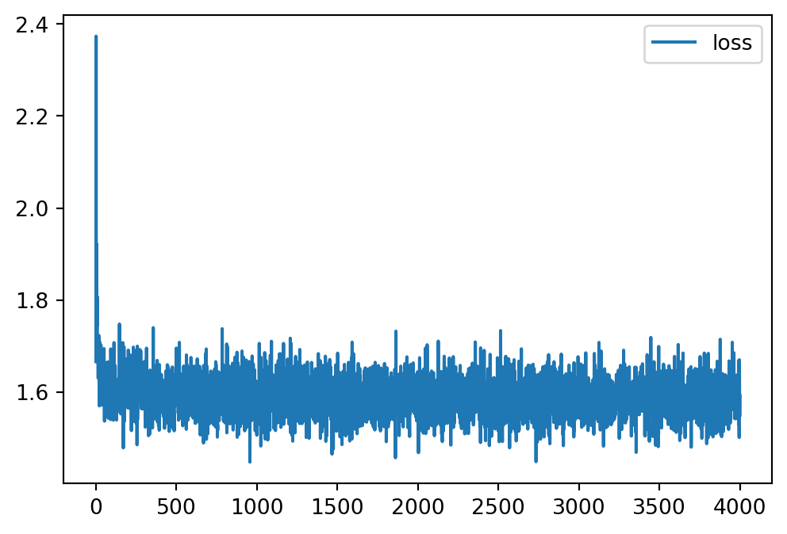
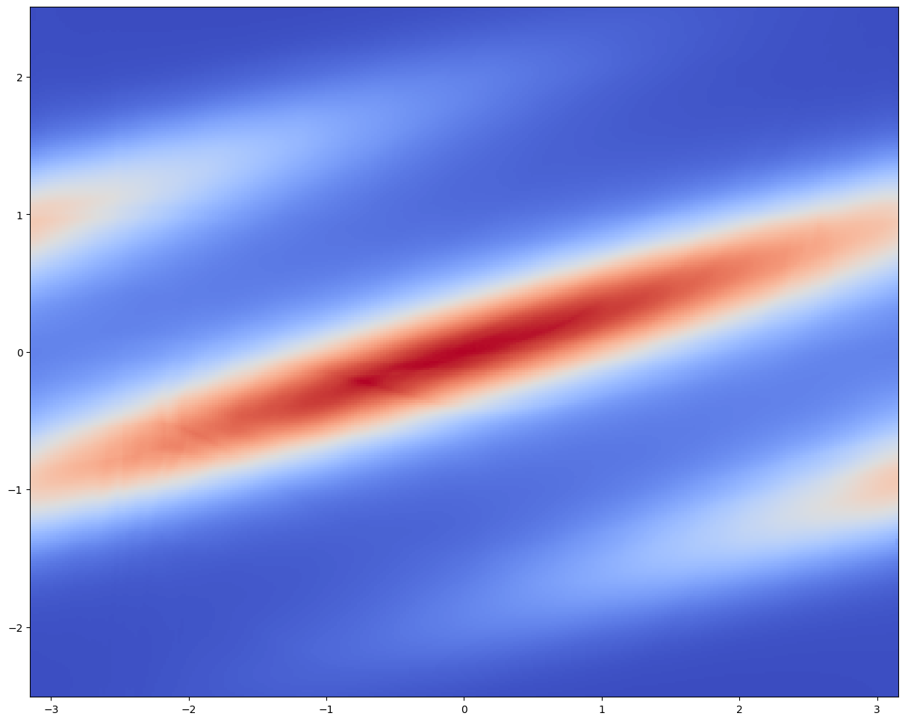

正規化流
深層生成モデル４
2024-02-14
PyTorch を用いて，正規化流の実装の概要を見る．
A Blog Entry on Bayesian Computation by an Applied Mathematician
$$
$$
# Import required packages
import torch
import torchvision as tv
import numpy as np
import normflows as nf
from matplotlib import pyplot as plt
from mpl_toolkits.mplot3d import Axes3D
from matplotlib import cm
from tqdm import tqdm# Set up model
# Define 2D Gaussian base distribution
base = nf.distributions.base.DiagGaussian(2)
# Define list of flows
num_layers = 32
flows = []
for i in range(num_layers):
# Neural network with two hidden layers having 64 units each
# Last layer is initialized by zeros making training more stable
param_map = nf.nets.MLP([1, 64, 64, 2], init_zeros=True)
# Add flow layer
flows.append(nf.flows.AffineCouplingBlock(param_map))
# Swap dimensions
flows.append(nf.flows.Permute(2, mode='swap'))
# Construct flow model
model = nf.NormalizingFlow(base, flows)
device = torch.device("mps")
model = model.to(device)# Define target distribution
target = nf.distributions.TwoMoons()
# Plot target distribution
grid_size = 200
xx, yy = torch.meshgrid(torch.linspace(-3, 3, grid_size), torch.linspace(-3, 3, grid_size))
zz = torch.cat([xx.unsqueeze(2), yy.unsqueeze(2)], 2).view(-1, 2)
zz = zz.to(device)
log_prob = target.log_prob(zz).to('cpu').view(*xx.shape)
prob = torch.exp(log_prob)
prob[torch.isnan(prob)] = 0
# plt.figure(figsize=(15, 15))
plt.pcolormesh(xx, yy, prob.data.numpy(), cmap='coolwarm')
plt.gca().set_aspect('equal', 'box')
plt.show()
# Plot initial flow distribution
model.eval()
log_prob = model.log_prob(zz).to('cpu').view(*xx.shape)
model.train()
prob = torch.exp(log_prob)
prob[torch.isnan(prob)] = 0
# plt.figure(figsize=(15, 15))
plt.pcolormesh(xx, yy, prob.data.numpy(), cmap='coolwarm')
plt.gca().set_aspect('equal', 'box')
plt.show()# Train model
max_iter = 4000
num_samples = 2 ** 9
show_iter = 500
loss_hist = np.array([])
optimizer = torch.optim.Adam(model.parameters(), lr=5e-4, weight_decay=1e-5)
for it in tqdm(range(max_iter)#, disable=True
):
optimizer.zero_grad()
# Get training samples
x = target.sample(num_samples).to(device)
# Compute loss
loss = model.forward_kld(x)
# Do backprop and optimizer step
if ~(torch.isnan(loss) | torch.isinf(loss)):
loss.backward()
optimizer.step()
# Log loss
loss_hist = np.append(loss_hist, loss.to('cpu').data.numpy())
# Plot learned distribution
if (it + 1) % show_iter == 0:
model.eval()
log_prob = model.log_prob(zz)
model.train()
prob = torch.exp(log_prob.to('cpu').view(*xx.shape))
prob[torch.isnan(prob)] = 0
# plt.figure(figsize=(15, 15))
plt.pcolormesh(xx, yy, prob.data.numpy(), cmap='coolwarm')
plt.gca().set_aspect('equal', 'box')
plt.show()
np.save('loss_history.npy', loss_hist)# Plot loss
# plt.figure(figsize=(10, 10))
loss_hist = np.load('Files/loss_history.npy')
plt.plot(loss_hist, label='loss')
plt.legend()
plt.show()
# Plot target distribution
f, ax = plt.subplots(1, 2, sharey=True, figsize=(15, 7))
log_prob = target.log_prob(zz).to('cpu').view(*xx.shape)
prob = torch.exp(log_prob)
prob[torch.isnan(prob)] = 0
ax[0].pcolormesh(xx, yy, prob.data.numpy(), cmap='coolwarm')
ax[0].set_aspect('equal', 'box')
ax[0].set_axis_off()
ax[0].set_title('Target', fontsize=24)
# Plot learned distribution
model.eval()
log_prob = model.log_prob(zz).to('cpu').view(*xx.shape)
model.train()
prob = torch.exp(log_prob)
prob[torch.isnan(prob)] = 0
ax[1].pcolormesh(xx, yy, prob.data.numpy(), cmap='coolwarm')
ax[1].set_aspect('equal', 'box')
ax[1].set_axis_off()
ax[1].set_title('Real NVP', fontsize=24)
# plt.savefig("./Files/NF2.png")
plt.subplots_adjust(wspace=0.1)
plt.show()
円周 \(S^1\) 上の確率分布として，wrapped Normal 分布や von Mises 分布がある．
今回は後者を採用し，\(\mathbb{R}^2\) 上で密度モデリングを試みる：
# Set up target
class GaussianVonMises(nf.distributions.Target):
def __init__(self):
super().__init__(prop_scale=torch.tensor(2 * np.pi),
prop_shift=torch.tensor(-np.pi))
self.n_dims = 2
self.max_log_prob = -1.99
self.log_const = -1.5 * np.log(2 * np.pi) - np.log(np.i0(1))
def log_prob(self, x):
return -0.5 * x[:, 0] ** 2 + torch.cos(x[:, 1] - 3 * x[:, 0]) + self.log_const
target = GaussianVonMises()
# Plot target
grid_size = 300
xx, yy = torch.meshgrid(torch.linspace(-2.5, 2.5, grid_size), torch.linspace(-np.pi, np.pi, grid_size))
zz = torch.cat([xx.unsqueeze(2), yy.unsqueeze(2)], 2).view(-1, 2)
log_prob = target.log_prob(zz).view(*xx.shape)
prob = torch.exp(log_prob)
prob[torch.isnan(prob)] = 0
plt.figure(figsize=(15, 15))
plt.pcolormesh(yy, xx, prob.data.numpy(), cmap='coolwarm')
plt.gca().set_aspect('equal', 'box')
plt.show()今回は 12 層の Neural Spline Flow を採用し，２次元の Gaussian 分布に基底として採用する．
base = nf.distributions.UniformGaussian(2, [1], torch.tensor([1., 2 * np.pi]))
K = 12
flow_layers = []
for i in range(K):
flow_layers += [nf.flows.CircularAutoregressiveRationalQuadraticSpline(2, 1, 512, [1], num_bins=10,
tail_bound=torch.tensor([5., np.pi]),
permute_mask=True)]
model = nf.NormalizingFlow(base, flow_layers, target)
# Move model on GPU if available
device = torch.device("mps")
model = model.to(device)# Plot model
log_prob = model.log_prob(zz.to(device)).to('cpu').view(*xx.shape)
prob = torch.exp(log_prob)
prob[torch.isnan(prob)] = 0
plt.figure()
plt.pcolormesh(yy, xx, prob.data.numpy(), cmap='coolwarm')
plt.gca().set_aspect('equal', 'box')
plt.show()# Train model
max_iter = 10000
num_samples = 2 ** 14
show_iter = 2500
loss_hist = np.array([])
optimizer = torch.optim.Adam(model.parameters(), lr=5e-4)
scheduler = torch.optim.lr_scheduler.CosineAnnealingLR(optimizer, max_iter)
for it in tqdm(range(max_iter)):
optimizer.zero_grad()
# Compute loss
loss = model.reverse_kld(num_samples)
# Do backprop and optimizer step
if ~(torch.isnan(loss) | torch.isinf(loss)):
loss.backward()
optimizer.step()
# Log loss
loss_hist = np.append(loss_hist, loss.to('cpu').data.numpy())
# Plot learned model
if (it + 1) % show_iter == 0:
model.eval()
with torch.no_grad():
log_prob = model.log_prob(zz.to(device)).to('cpu').view(*xx.shape)
model.train()
prob = torch.exp(log_prob)
prob[torch.isnan(prob)] = 0
plt.figure(figsize=(15, 15))
plt.pcolormesh(yy, xx, prob.data.numpy(), cmap='coolwarm')
plt.gca().set_aspect('equal', 'box')
plt.show()
# Iterate scheduler
scheduler.step()
# Plot loss
plt.figure(figsize=(10, 10))
plt.plot(loss_hist, label='loss')
plt.legend()
plt.show()

訓練は L4 で約１時間であった．
# 2D plot
f, ax = plt.subplots(1, 2, sharey=True, figsize=(15, 7))
log_prob = target.log_prob(zz).view(*xx.shape)
prob = torch.exp(log_prob)
prob[torch.isnan(prob)] = 0
ax[0].pcolormesh(yy, xx, prob.data.numpy(), cmap='coolwarm')
ax[0].set_aspect('equal', 'box')
ax[0].set_xticks(ticks=[-np.pi, -np.pi/2, 0, np.pi/2, np.pi])
ax[0].set_xticklabels(['$-\pi$', r'$-\frac{\pi}{2}$', '$0$', r'$\frac{\pi}{2}$', '$\pi$'],
fontsize=20)
ax[0].set_yticks(ticks=[-2, -1, 0, 1, 2])
ax[0].set_yticklabels(['$-2$', '$-1$', '$0$', '$1$', '$2$'],
fontsize=20)
ax[0].set_xlabel('$\phi$', fontsize=24)
ax[0].set_ylabel('$x$', fontsize=24)
ax[0].set_title('Target', fontsize=24)
log_prob = model.log_prob(zz.to(device)).to('cpu').view(*xx.shape)
prob = torch.exp(log_prob)
prob[torch.isnan(prob)] = 0
ax[1].pcolormesh(yy, xx, prob.data.numpy(), cmap='coolwarm')
ax[1].set_aspect('equal', 'box')
ax[1].set_xticks(ticks=[-np.pi, -np.pi/2, 0, np.pi/2, np.pi])
ax[1].set_xticklabels(['$-\pi$', r'$-\frac{\pi}{2}$', '$0$', r'$\frac{\pi}{2}$', '$\pi$'],
fontsize=20)
ax[1].set_xlabel('$\phi$', fontsize=24)
ax[1].set_title('Neural Spline Flow', fontsize=24)
plt.subplots_adjust(wspace=0.1)
plt.show()# 3D plot
fig = plt.figure(figsize=(15, 7))
ax1 = fig.add_subplot(1, 2, 1, projection='3d')
ax2 = fig.add_subplot(1, 2, 2, projection='3d')
phi = np.linspace(-np.pi, np.pi, grid_size)
z = np.linspace(-2.5, 2.5, grid_size)
# create the surface
x = np.outer(np.ones(grid_size), np.cos(phi))
y = np.outer(np.ones(grid_size), np.sin(phi))
z = np.outer(z, np.ones(grid_size))
# Target
log_prob = target.log_prob(zz).view(*xx.shape)
prob = torch.exp(log_prob)
prob[torch.isnan(prob)] = 0
prob_vis = prob / torch.max(prob)
myheatmap = prob_vis.data.numpy()
ax1._axis3don = False
ax1.plot_surface(x, y, z, cstride=1, rstride=1, facecolors=cm.coolwarm(myheatmap), shade=False)
ax1.set_title('Target', fontsize=24, y=0.97, pad=0)
# Model
log_prob = model.log_prob(zz.to(device)).to('cpu').view(*xx.shape)
prob = torch.exp(log_prob)
prob[torch.isnan(prob)] = 0
prob_vis = prob / torch.max(prob)
myheatmap = prob_vis.data.numpy()
ax2._axis3don = False
ax2.plot_surface(x, y, z, cstride=1, rstride=1, facecolors=cm.coolwarm(myheatmap), shade=False)
t = ax2.set_title('Neural Spline Flow', fontsize=24, y=0.97, pad=0)
plt.show()
今回は CIFAR-10 という手描き文字画像データセットを学習し，画像の生成を目指す．
この際には，(Dinh et al., 2017) の multiscale architecture を採用し，基底分布も成分ごとにスケールが違う正規分布を用いる．
# Set up model
# Define flows
L = 3
K = 16
torch.manual_seed(0)
input_shape = (3, 32, 32)
n_dims = np.prod(input_shape)
channels = 3
hidden_channels = 256
split_mode = 'channel'
scale = True
num_classes = 10
# Set up flows, distributions and merge operations
q0 = []
merges = []
flows = []
for i in range(L):
flows_ = []
for j in range(K):
flows_ += [nf.flows.GlowBlock(channels * 2 ** (L + 1 - i), hidden_channels,
split_mode=split_mode, scale=scale)]
flows_ += [nf.flows.Squeeze()]
flows += [flows_]
if i > 0:
merges += [nf.flows.Merge()]
latent_shape = (input_shape[0] * 2 ** (L - i), input_shape[1] // 2 ** (L - i),
input_shape[2] // 2 ** (L - i))
else:
latent_shape = (input_shape[0] * 2 ** (L + 1), input_shape[1] // 2 ** L,
input_shape[2] // 2 ** L)
q0 += [nf.distributions.ClassCondDiagGaussian(latent_shape, num_classes)]
# Construct flow model with the multiscale architecture
model = nf.MultiscaleFlow(q0, flows, merges)
model = model.to(device)# Prepare training data
batch_size = 128
transform = tv.transforms.Compose([tv.transforms.ToTensor(), nf.utils.Scale(255. / 256.), nf.utils.Jitter(1 / 256.)])
train_data = tv.datasets.CIFAR10('datasets/', train=True,
download=True, transform=transform)
train_loader = torch.utils.data.DataLoader(train_data, batch_size=batch_size, shuffle=True,
drop_last=True)
test_data = tv.datasets.CIFAR10('datasets/', train=False,
download=True, transform=transform)
test_loader = torch.utils.data.DataLoader(test_data, batch_size=batch_size)
train_iter = iter(train_loader)# Train model
max_iter = 20000
loss_hist = np.array([])
optimizer = torch.optim.Adamax(model.parameters(), lr=1e-3, weight_decay=1e-5)
for i in tqdm(range(max_iter)):
try:
x, y = next(train_iter)
except StopIteration:
train_iter = iter(train_loader)
x, y = next(train_iter)
optimizer.zero_grad()
loss = model.forward_kld(x.to(device), y.to(device))
if ~(torch.isnan(loss) | torch.isinf(loss)):
loss.backward()
optimizer.step()
loss_hist = np.append(loss_hist, loss.detach().to('cpu').numpy())plt.figure(figsize=(10, 10))
plt.plot(loss_hist, label='loss')
plt.legend()
plt.savefig('fig1.png')
plt.show()2万イテレーションで1時間10分を要したが，cutting-edge な性能を出すには遥かに大きいモデルを 100 万イテレーションほどする必要があるという．
# Model samples
num_sample = 10
with torch.no_grad():
y = torch.arange(num_classes).repeat(num_sample).to(device)
x, _ = model.sample(y=y)
x_ = torch.clamp(x, 0, 1)
plt.figure(figsize=(10, 10))
plt.imshow(np.transpose(tv.utils.make_grid(x_, nrow=num_classes).cpu().numpy(), (1, 2, 0)))
plt.savefig('fig2.png')
plt.show()
Eric Jang 氏 による チュートリアル （やその他のチュートリアル）は，TensorFlow 1 を用いており，特に tfb.Affine はもうサポートされていない（対応表）．
normflows というパッケージ (Stimper et al., 2023) は PyTorch ベースの実装を提供しており，これを代わりに用いた．Real NVP, Neural Spline Flow, Glow などのデモを公開している．